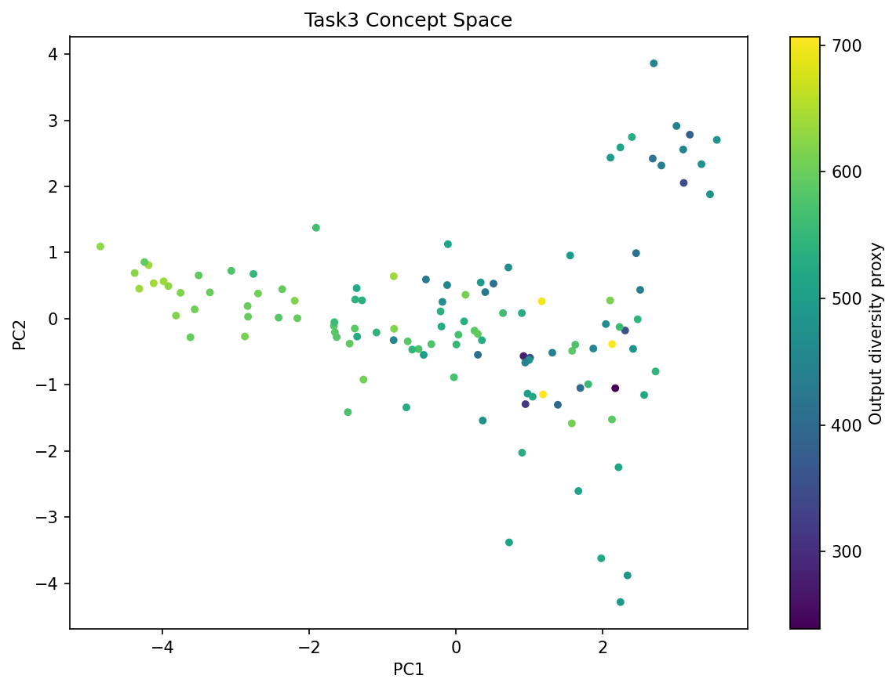

Figure 4: Cumulative explained variance ratio across 50 PCA components.
Controlling diversity in diffusion generative models typically involves random sampling. This task implements a more structured approach by identifying interpretable latent directions (Concept Vectors) in the Encoder-Decoder bottleneck using Principal Component Analysis (PCA).
Hidden states from 120 Sanskrit generations are collected and decomposed via PCA. We identify the principal component most correlated with sequence diversity (unique token ratio) and apply linear steering: h' = h + α · vdiv.
👉 Implementation: analysis/concept_vectors.py
The Encoder-Decoder variant demonstrated a highly structured latent space, with the first 50 components explaining **90.9%** of the total variance. This indicates a high degree of correlation between latent features in this specific architecture.
Following the 6-point PCA analysis framework, the benchmarks for the T4 Encoder-Decoder configuration are detailed below:
| Subtask Identification | Analytical Objective | T4 Model Outcome |
|---|---|---|
| 1. Latent Vector Collection | Extract hidden states from decoder bottleneck | ✅ Collected: 120 samples from inference. |
| 2. PCA Variance Analysis | Determine variance captured in principal components | 90.9% Variance (Top 50 components) |
| 3. Diversity Mode Identifying | Find PC most correlated with token variance | PC 0 (|r| = 0.565) |
| 4. Steering Sensitivity Sweep | Measure impact of alpha on semantic drift | Stability 0.222 (High sensitivity) |
| 5. Diversity Spectrum Analysis | Visualize outputs across alpha interpolation | ✅ Generated: 5-point spectrum visualized. |
| 6. Semantic Integrity Test | Check syntax validity under strong steering | ❌ Failed: Collapses at |alpha| > 1.5. |

While the Encoder-Decoder model captures more variance in early components than the cross-attention variant, the steered outputs often collapse into repetitive tokens at extreme alpha values (α > 1.5). This suggests that while the "Concept Space" is well-defined, the decoding mechanism is rigid and less receptive to latent interpolation.